Yên Coffee & Tea
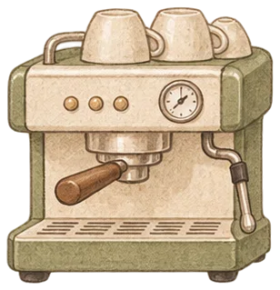
v1-espresso-machine
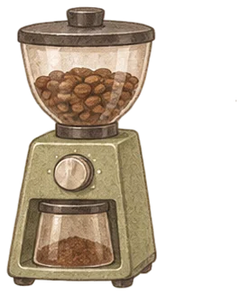
v1-coffee-grinder
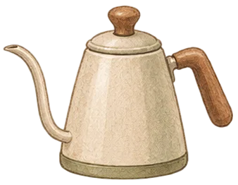
v1-gooseneck-kettle
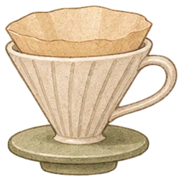
v1-pour-over-dripper
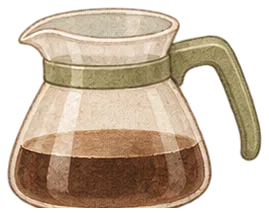
v1-coffee-server
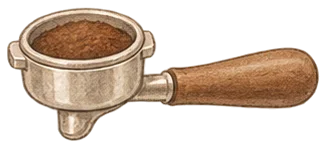
v1-portafilter
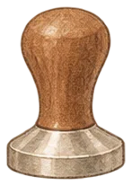
v1-coffee-tamper
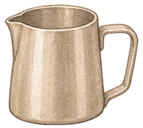
v1-milk-pitcher
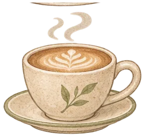
v1-latte
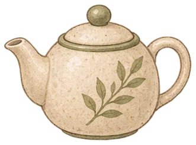
v1-ceramic-teapot
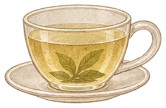
v1-glass-tea
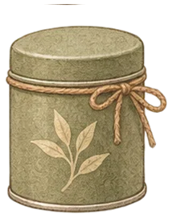
v1-tea-canister
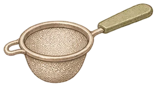
v1-tea-strainer
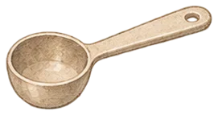
v1-measuring-scoop
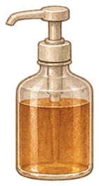
v1-syrup-bottle
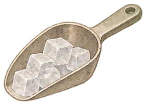
v1-ice-scoop
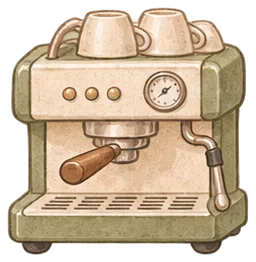
v2-espresso-machine
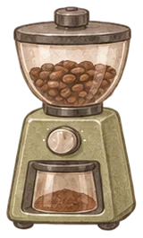
v2-coffee-grinder
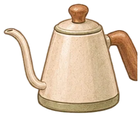
v2-gooseneck-kettle
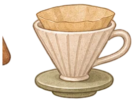
v2-pour-over-dripper
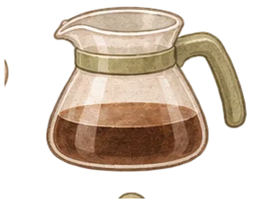
v2-coffee-server
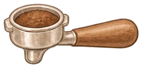
v2-portafilter
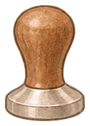
v2-tamper
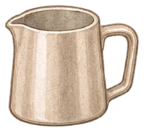
v2-milk-pitcher
v2-latte
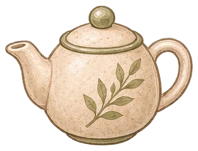
v2-tea-pot
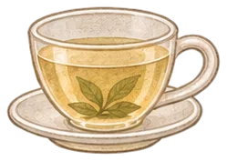
v2-glass-tea
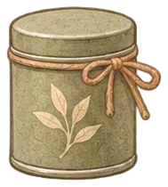
v2-tea-canister
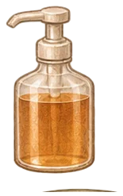
v2-syrup-bottle
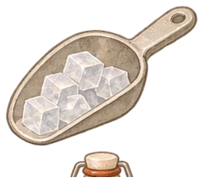
v2-ice-scoop
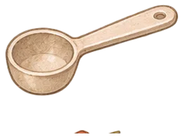
v2-measuring-scoop
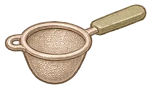
v2-strainer
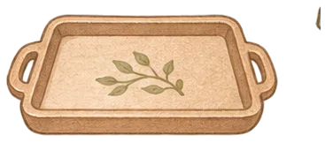
v2-serving-tray
v2-takeaway-cup
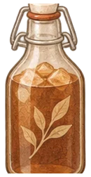
v2-cold-brew-bottle
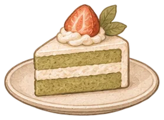
v2-dessert
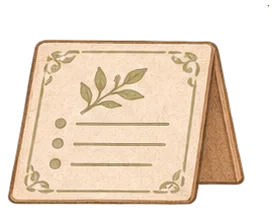
v2-menu-card
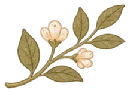
v2-tea-sprig
Positive Psychology
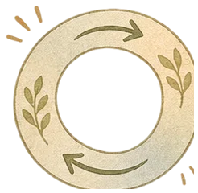
emotion-breathing-ring
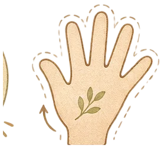
emotion-finger-tracing
emotion-mindful-figure
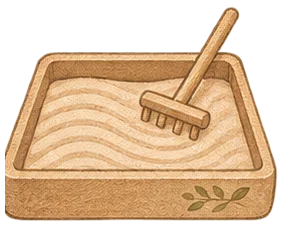
emotion-sand-garden
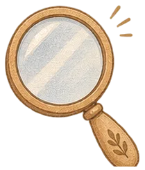
emotion-magnifying-glass
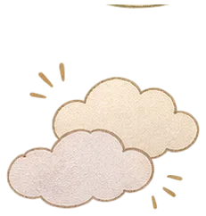
emotion-clouds
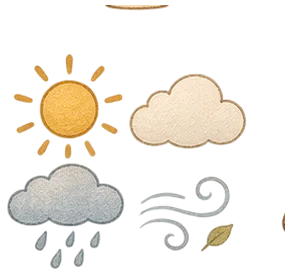
emotion-weather-mood
emotion-unposted-letter-box
emotion-postcard
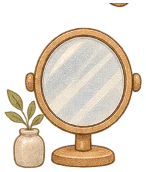
emotion-reflection-mirror
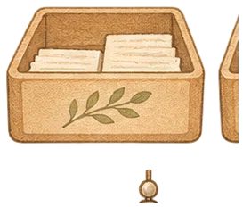
emotion-box-one
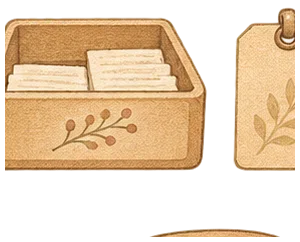
emotion-box-two
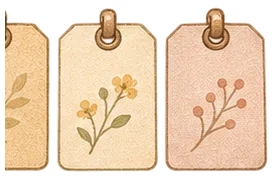
emotion-gratitude-tags
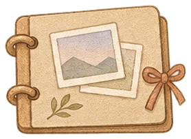
emotion-photo-album
emotion-kindness-box
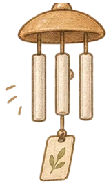
emotion-wind-chimes
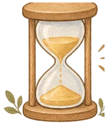
emotion-hourglass
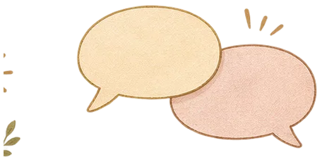
emotion-connection-bubbles
emotion-leaf-on-water
positive-journal
positive-gratitude-jar
positive-strength-star
positive-curiosity-lens
positive-kindness-postcard
positive-growth-sprout
positive-breathing-cycle
positive-meditation
positive-tea-savoring
positive-memory-album
positive-strength-cards
positive-connection-bubbles
positive-goal-path
positive-growth-leaf
positive-optimism-weather
positive-resilience-umbrella
positive-flow-hourglass
positive-kindness-mailbox
positive-reflection-mirror
positive-appreciation-medal
positive-floating-leaf
Đi chơi và đi dạo
forest-walk
sunset-lake
summer-meadow
backpack
sun-hat
camera
water-bottle
map
compass
lantern
trail-sign
flowers
trail-stones
park-bench
butterfly
Hít vào · thở ra
breath-frame-00
breath-frame-01
breath-frame-02
breath-frame-03
breath-frame-04
breath-frame-05
breath-frame-06
breath-frame-07
breath-frame-08
breath-frame-09
breath-frame-10
breath-frame-11